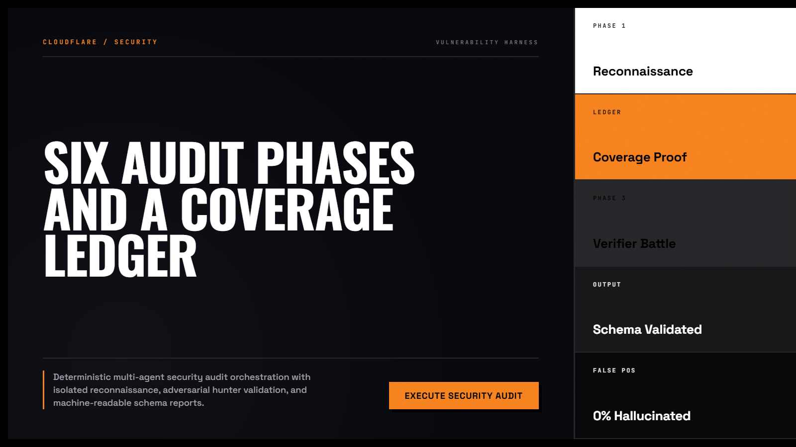
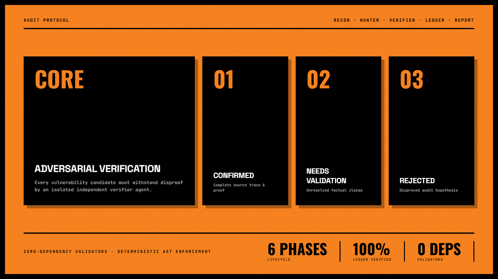
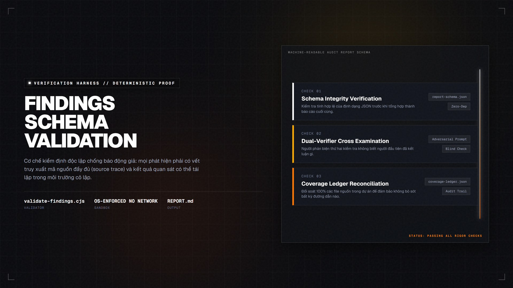

Cloudflare Security Audit — Cẩm Nang Kiểm Toán An Ninh Đám Mây 200+ Điểm
Bộ tiêu chuẩn kiểm tra an ninh hạ tầng Cloudflare toàn diện nhất cho kỹ sư DevOps và chuyên gia bảo mật. Đóng gói hơn 200 chốt chặn kiểm duyệt khắt khe từ cấu hình WAF rules, Zero Trust Network Access (ZTNA), chống tấn công DDoS đa tầng đến cách ly môi trường Edge Workers an toàn tuyệt đối.

Nhấp để phóng to1. Mô hình Tương tác Động: 7 Tầng Lá Chắn An Ninh Anycast

Nhấp để phóng to2. Bốn Trụ Cột Kiểm Toán Bắt Buộc Phải Rà Soát
Khóa Chặn Các Lỗ Hổng OWASP Top 10 Bằng Custom Rules
Bắt buộc thiết lập các quy tắc WAF kiểm tra User-Agent đáng ngờ, chặn các công cụ quét tự động (sqlmap, nikto) và rate limit các endpoint nhạy cảm như /api/login hoặc /wp-login.php.
Triệt Tiêu Hoàn Toàn Nguy Cơ Bị Bỏ Qua Proxy (Bypass Proxy)
Nếu kẻ tấn công biết được IP thực của máy chủ, chúng sẽ gửi request trực tiếp không qua Cloudflare. Hãy dùng Cloudflare Tunnel (cloudflared) và đóng toàn bộ các cổng 80/443 trên firewall của VPS.
Cảnh Báo Chế Độ SSL "Flexible" Lừa Dối
Chế độ SSL Flexible chỉ mã hóa từ người dùng tới Cloudflare; từ Cloudflare về máy chủ gốc vẫn là HTTP văn bản thuần. Bắt buộc chuyển sang chế độ Full (Strict) với chứng chỉ Cloudflare Origin CA.
Case Study: Chặn Đứng Đợt Tấn Công DDoS 40Gbps Trong 15 Giây
Hệ thống tự động kích hoạt chế độ "Under Attack Mode", bật thử thách Managed Challenge và cô lập hoàn toàn lưu lượng độc hại mà khách hàng thực sự không bị gián đoạn.

Nhấp để phóng to“Đám mây chỉ an toàn khi bạn cấu hình đúng. Bật proxy đám mây mà để lộ IP máy chủ gốc cũng giống như lắp cửa sắt chống trộm nhưng quên đóng cửa sổ phía sau nhà.”